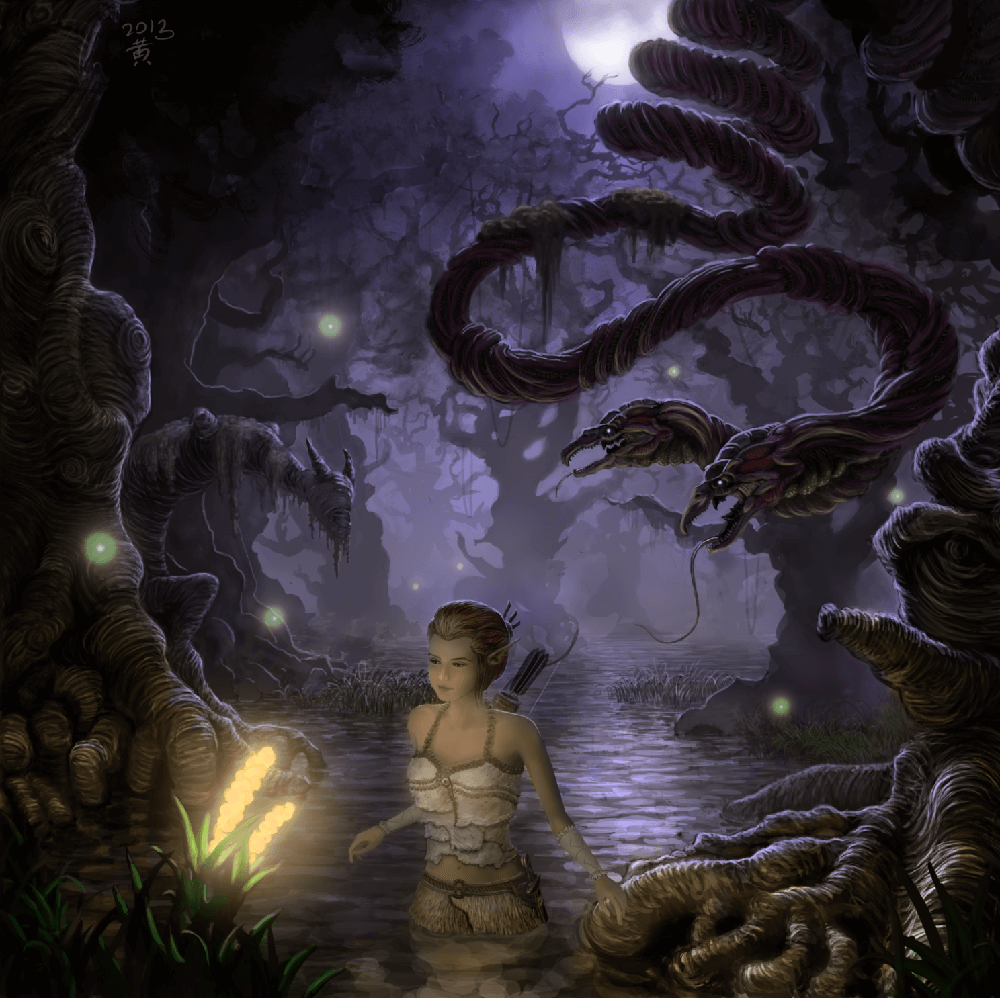

Combat
As described previously on our Home Page, the Combat pillar focuses on how violent interactions between characters are resolved. Typically, this is the most complex portion of the rules in each system. We cover that subject more in-depth in our article about why combat has so many rules and if the other pillars are less important as a result of the imbalance of rules. Each pillar is, as always, only as important to the game as it is to its players. In other words, the Game Master should only emphasize the combat pillar if that’s what they and the players want.
As described previously on our Home Page, the Combat pillar focuses on how violent interactions between characters are resolved. Typically, this is the most complex portion of the rules in each system. We cover that subject more in-depth in our article about why combat has so many rules and if the other pillars are less important as a result of the imbalance of rules. Each pillar is, as always, only as important to the game as it is to its players. In other words, the Game Master should only emphasize the combat pillar if that’s what they and the players want.
That being said, many systems implement and/or explain these combat steps so clearly that it’s usually hard to misunderstand the flow of combat in those systems.